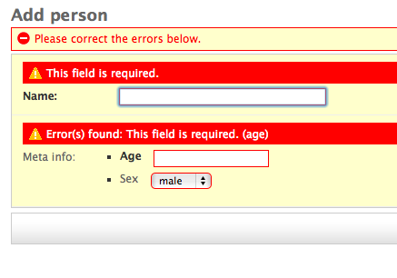

Getting Started¶
django-formfield is a form field that accepts a django form as its first argument, and validates as well as render’s each form field as expected. Yes a form within a form, within a dream? There are two types of fields available, FormField and ModelFormField. For ModelFormField the data is stored in json. For FormField data is simply returned as a python dictionary (form.cleaned_data)
Example¶
from django.db import models
from django import forms
from formfield import ModelFormField
class PersonMetaForm(forms.Form):
age = forms.IntegerField()
sex = forms.ChoiceField(choices=((1, 'male'), (2, 'female')), required=False)
class Person(models.Model):
name = CharField(max_length=200)
meta_info = ModelFormField(PersonMetaForm)
Which will result in something like this (using the admin)

The ModelFormField is automatically set to null=False, blank=False, this is because validation is done on the inner form. As a result you will see something like the following if we hit save on the change form:
If we supply the change for valid data you should get a python dictionary when retreiving the data:
>>> person = Person.objects.get(pk=1)
>>> person.meta_info
{u'age': 12, u'sex': u'1'}
The form is the only thing forcing input of the expected values, behind the scenes the data is being serialized into json. Therefore on the python level we can supply meta_info any valid json::
>>> from sample_app.models import Person
>>> data = {'some': 'thing', 'is': 'wrong', 'here': 'help!'}
>>> p = Person.objects.create(name="Joan", meta_info=data)
>>> p.meta_info
{'is': 'wrong', 'some': 'thing', 'here': 'help!'}
Note
If the form field is being made available via a form change, such as the admin, any unexpected value will be overriden by what the form returns . For example, the PersonMetaForm only expects age and sex, so none of the values above (‘is’, ‘some’ and ‘here’) match and will be overridden when the form submitted.
We can however, make the field hidden or readonly and use it like above.